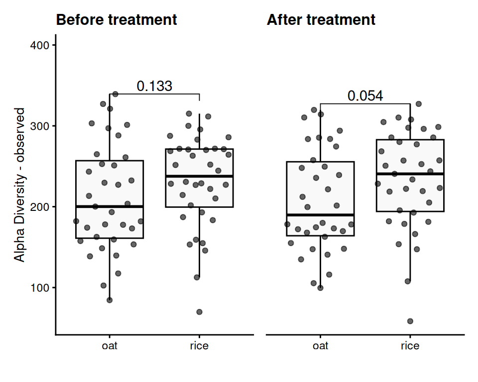
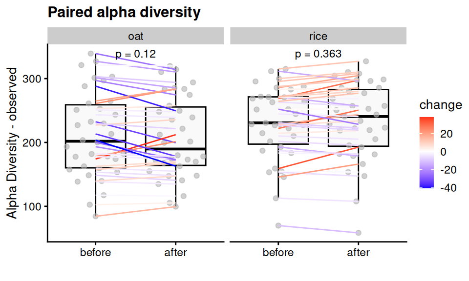

Alpha Diversity
1 Community diversity
2 Group-wise comparisons
- Index: observed
- Group variable: diet
- Multiple testing correction: fdr
- Statistical test Wilcoxon
2.1 Table of the top findings
2.1.1 Across-group
2.1.1.1 Before treatment
- Multiple testing correction: fdr
- Statistical test: Wilcoxon
2.1.1.2 After treatment
- Multiple testing correction: fdr
- Statistical test: Wilcoxon

2.1.2 Within-group
2.1.2.1 Paired treatment
- Multiple testing correction: paired -none
- Statistical test: Wilcoxon
3 Alternate analyses
Beta (Estimate): Shows the effect size and direction of a predictor on the outcome. Positive means an increase, negative a decrease.
95% CI: Range where the true beta is likely to fall, reflecting precision.
p-Value: Tests if beta differs from zero; p<0.05p < 0.05p<0.05 suggests significance.
| Characteristic |
before
|
after
|
||||
|---|---|---|---|---|---|---|
| Beta | 95% CI1 | p-value | Beta | 95% CI1 | p-value | |
| (Intercept) | 152 | 67, 236 | <0.001 | 144 | 59, 229 | 0.001 |
| meal_group | 0.4 | 0.3 | ||||
| 1 | — | — | — | — | ||
| 2 | 32 | -11, 75 | 0.14 | 28 | -16, 72 | 0.2 |
| 3 | 28 | -15, 71 | 0.2 | 30 | -14, 74 | 0.2 |
| 4 | 10 | -32, 53 | 0.6 | -3.7 | -47, 39 | 0.9 |
| age | 1.0 | -0.44, 2.5 | 0.2 | 1.2 | -0.25, 2.7 | 0.10 |
| 1 CI = Confidence Interval | ||||||
| Paired test between timepoints (1 and 2) | Beta | 95% CI1 | p-value |
|---|---|---|---|
| (Intercept) | 147 | -Inf, Inf | <0.001 |
| meal_group | 0.6 | ||
| 1 | — | — | |
| 2 | 28 | -Inf, Inf | >0.9 |
| 3 | 28 | -Inf, Inf | >0.9 |
| 4 | 2.3 | -28, 32 | 0.9 |
| age | 1.2 | 0.13, 2.2 | 0.025 |
| 1 CI = Confidence Interval | |||
4 Data Summary
class: TreeSummarizedExperiment
dim: 1700 140
metadata(0):
assays(2): counts relabundance
rownames(1700): SGB4933 SGB4285 ... SGB15018 SGB4921
rowData names(9): kingdom phylum ... strain clade_name
colnames(140): AE1332 AK1371 ... TS2358 VK2336
colData names(16): sample id ... group observed_log2
reducedDimNames(0):
mainExpName: NULL
altExpNames(16): kingdom phylum ... KO metacyc
rowLinks: NULL
rowTree: NULL
colLinks: NULL
colTree: NULL